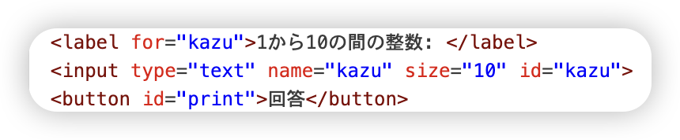
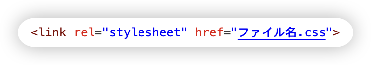
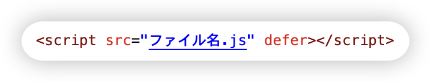
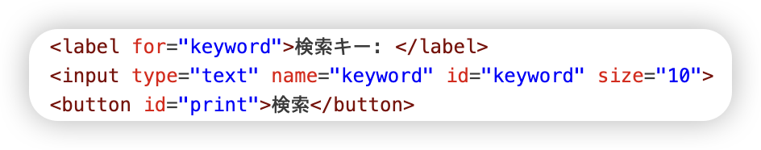
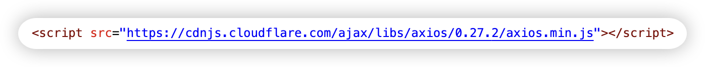

この授業では先行する情報工学の専門科目の基礎知識を応用して実践的な能力を修得することが目的です。 個人的な目標としてはちゃんと授業内容を踏まえてHTML等を用いたWebページ作成ができるようになることです。
プロジェクト課題はグルメ情報を選びました。先生の紹介は三つの内容の中では二番目のむずがしさがあるだそうです。 簡単だから選んだわけだはなく、自分が八王子市に住んでいるから、グルメ情報を知って、何食べるか迷っている時に自分も使えるからです。 1回目の課題では、具体的な情報をli、ulなどに書けて、htmlに表示されるようにすばいいだけだったけど、最終の課題はhtmlに検索欄だけの状態にして キーワードを入力して、検索する機能を実現するような課題です。6回の授業を通して、何とか検索機能を実現したけど、さすがに難しいし、時間がかかる課題でした。 詳しい点は感想のところに書きます。
プロジェクト課題で作成したページ： プロジェクト課題
講義資料のkazuate.jsを丸コピーして課題を完成する形になっているのだが、タイトルのkazuate.jsまでコピーしそのまま貼り付けたのを気づいてなくて、
コンソール実行時に何度やってもエラーが出て、絶望な1時間を過ごしました、でも先輩に聞いてたら、どのくらい簡単なミスをしたかと意識して、本当に悔しかった。
課題自体はほどんどjavaの書き方と変わってなく、System.out.println()をconsole.log()に変わっただけで難しくないと思います。あとは比較の時＝は三つ使うように注意しましまた。
課題４−１更新：課題４−１では

で入力ボックスを作りました。また、document.querySelector()を使ってHTMLの入力値やボタンなどの要素を取得します。
そして、let botan = document.querySelector('#botan');
botan.onclick = function() {}の中に、入力された値を読み込み、判定、出力するなどの処理を書き込むことができます。
さらに、textContent = を利用することで、htmlの内容を更新し、ユーザーの入力内容に相応する回答がボタンを押すたびに表示されるようになりました。
数あてゲームのページ： 数あてゲームのHTMLファイル
初めてhtmlの授業を受けて色々学びました。ほどんどの符号が<>で囲んでいるとわかりました、そのほかにも<を使って<>を普通の文字として表現するなども学びました。 自分の編集で真っ白のホームページから情報いっぱい入力してとても達成感を感じました。これからの授業楽しんでいます。
演習の成果： 演習1-4のHTMLファイル
2回目の授業で色なhtmlの装飾法を学びました。まずは、HTML の head 要素に追加で次の link 要素を記述します． これでCSS のファイル「style.css」に従ってページを装飾できるようになりました 次にはcolorで文字の色の変更、class="special"や.specialの連動で特定の要素の指定を学びました。そしてa:link { color: pink; } a:visited { color: blue; } a:hover { text-decoration: none; }でクリックしたら色が変わる機能ができました。そのほかにもborder-bottomの変更、padding、height、widthなどを学びました
演習の成果： 演習2-3のHTMLファイル
3回目の授業になりました。今回では新しい言語『JavaScript』について学びました。 まず、CSSのように、外部のJavaScriptを追加するには、 でHTML の head 要素に script 要素を追加することが必要です console.log('こんにちは');でコンソールに文書を出力することができる、考えたらjavaのSystem.out.printの役割をしているのではないかと思いました。 でもjavaと違うのは、Javascriptではlet一つでいろんな変数を定義できておても覚えやすいです。 それで for-of 構文for (let n of ns) {} カッコのなかのコマンドにより配列の要素1つずつに対してその処理をすることを学びました。 内容がだんだん難しくなっていると感じたけど、頑張りたいと思います。
演習の成果： 演習3-6のHTMLファイル
4回目の授業です、あど二週でhtmlの授業が終わりますが、まだまだ自分のページにいろんな不足があります。今週の課題はちょっと時間かかりすぎました。まず、htmlに  を書き足して検索欄を作ることができました。inputは入力項目で、typeの属性値での入力の種類を決めることができます。 例えば、textはテキストボックス、colorは色など。ブラウザによって、入力画面も違います。 そして、document.querySelector()、カコの中にhtmlの要素名を書き込んで、その要素を取得することができます。 let 変数名 = document.querySelector()で変数名にhtmlの要素を代入することが一般的な使い方です。 また、function 名前{イベント}や変数名 = document.querySelector('button#ボタンの名前'); 変数名.addEventListener('click', 名前);でイベントハンドラを登録することができます。 今回はこれを使って数あてゲームにボタンを押すとユーザの入力値に応じて結果を表示する機能を装着しました。
演習の成果： 演習4-10のHTMLファイル
いよいよ第五回になりました、あと一回で授業終わりになるけど、プロジェクト課題まだ装飾してなくてこれから頑張らないといけないと思っています。 今回は前回の続きで、主に学んだのはcreateElement(要素名) ... 要素を新規作成、 要素1.insertAdjacentElement('beforeend', 要素2) ... 要素1の内部に要素2を配置 要素1.insertAdjacentElement('afterend', 要素2) ... 要素1の直後に要素2を配置と、 前回のlet 変数名 = document.querySelector('要素1#要素2')で要素を特定し、要素名.removeで削除することです。 さらにこれらをfunctionの中に書き込んで、前回で習ったイベント処理の登録をして、ボタンを押すとユーザの入力に応じて検索結果を出力することが可能になります。 プロジェクト課題の検索機能を実現するに一番大事なところです。
演習の成果： 演習5-7のHTMLファイル
プロジェクト課題が最終の課題なので、6回目の授業が終わった時点でこれまでプロジェクト課題やる時の工夫点，苦心点，強調点，感想で繰り返してまとめたいと思います。 まずはhtmlの書き方です。2回目の授業にでCSS のファイル「style.css」に従ってページを装飾する、 次に4回目の授業ではを書き足して検索欄を作る、最後の授業で AJAX 通信などの機能を装着してからもう、編集が終わりました。 それで、二番目に紹介するけど、これまで学んだ知識の中では一番だいじなJavaScriptの工夫点です。 課題順に言うと、まずは課題3-2。初めてJavaScript勉強しました。 for-of 構文で配列の要素1つずつに対して処理を実行することができました。これがJavaでのFor構文と同じような機能をしていて、とても便利です。 第4回ではもうイベント処理を学んだが、まだプロジェクト課題に書いていません。 第5回にはgourmet.jsのしたに書いてある内容を引用し、htmlに表示するというFunctionを書いたが、 ここまでイベントはボタンに登録していないから、コンソールで実行して結果を見るしかない。 6回目はいよいよ本題に入りました。まずはページ上の検索ボタン等をクリックした時のイベントハンドラとして sendRequest() を登録し、 それで、sendRequest()で，検索用 URL を作って、Ajax 通信によりリクエストを送信します あとは、通信に成功した場合にレスポンスを受け取る関数は showResult() この関数の中で data を取り出して printDom(data) を呼び出します。これはなかなか難しくて、授業資料でもらったものを参考しました。 通信に失敗したときと，通信終了の関数 showError() と finish()を書きました。 通信終了は変更しなくて大丈夫と言われて、コピペ〜で終わりました。楽でしたね。 最後にCSSなんだけど、だいぶ前にやったことだし、もうだいぶ忘れてしまい、参考資料を結構利用しました。